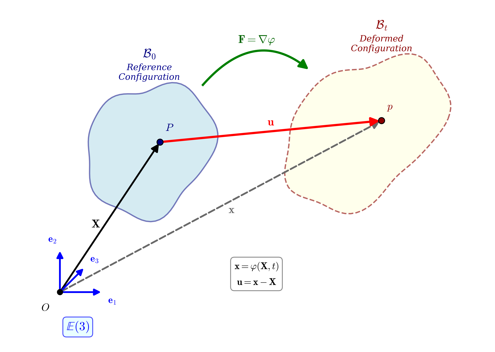
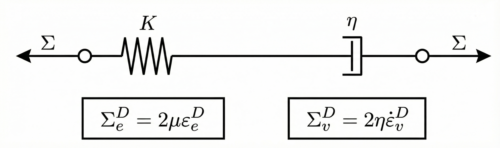
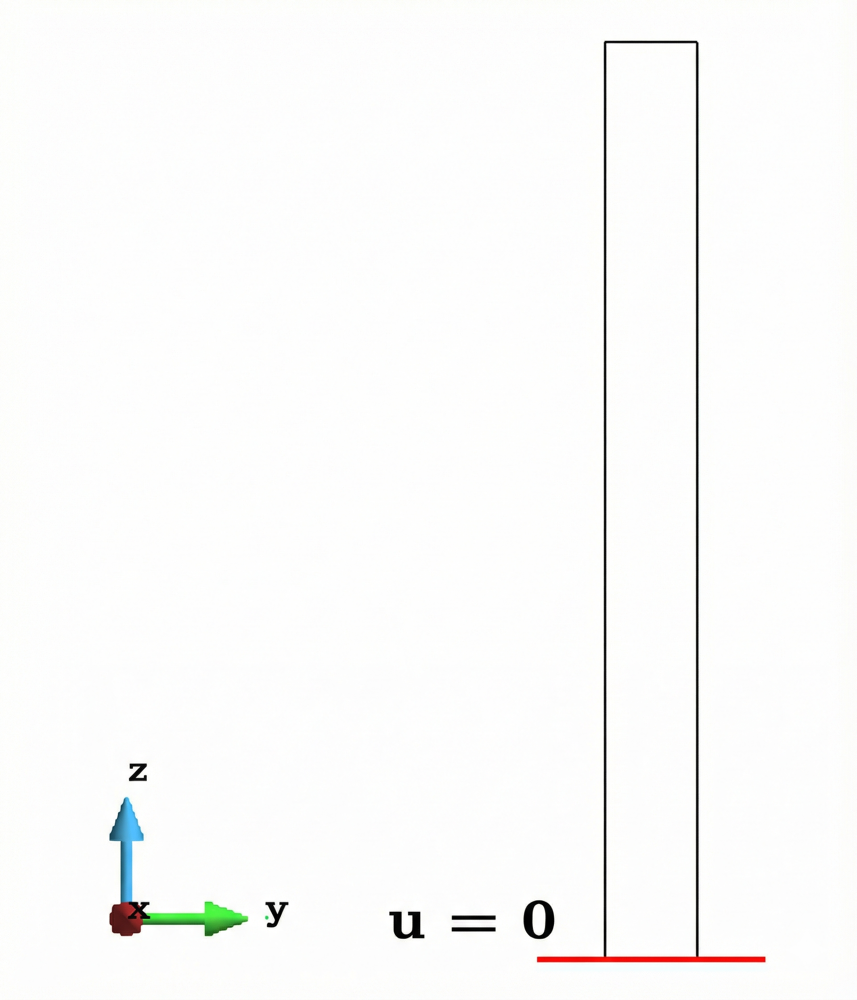
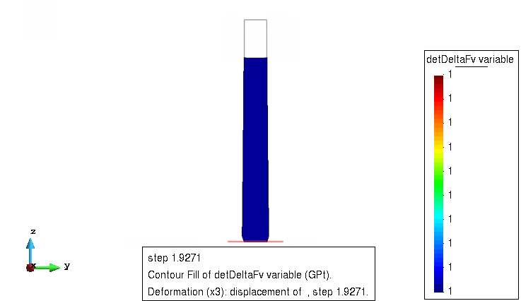
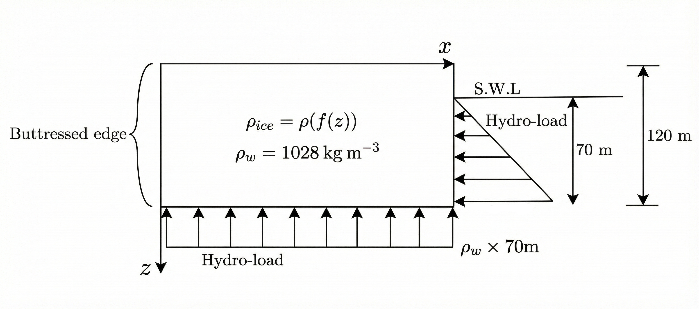

Logarithmic strain measures, material velocity gradient rates, and exponential map integration for glaciological mechanics
Ice-shelf and near-front dynamics involve transient loading and evolving boundaries that introduce a measurable elastic component alongside long-term creep.
Quantitative projections of ice-sheet evolution depend on numerical models resolving coupled mass & momentum transport. Calving-front stress redistribution differs substantially between purely viscous and viscoelastic descriptions.
The total deformation gradient is multiplicatively decomposed into elastic and viscous parts, introducing a stress-free intermediate configuration $\mathcal{B}_{\text{int}}$:
Under a superposed rigid rotation $\mathbf{Q}$:
$\mathbf{F}^* = \mathbf{Q}\mathbf{F}_e \cdot \mathbf{F}_v$
$\mathbf{Q}$ acts only on the elastic part — the viscous deformation and intermediate configuration are unaffected.

Three-configuration motion map: material $\mathcal{B}_0 \xrightarrow{\mathbf{F}_v} \mathcal{B}_\text{int} \xrightarrow{\mathbf{F}_e} \mathcal{B}_t$.

Maxwell viscoelastic solid: elastic spring + viscous dashpot in series.
A central modelling decision — choosing the right rate variable determines numerical stability and physical fidelity.
The viscous right Cauchy-Green rate $\dot{\mathbf{C}}_v = \dot{\mathbf{F}}_v^T \mathbf{F}_v + \mathbf{F}_v^T \dot{\mathbf{F}}_v$ introduces quadratic nonlinearity w.r.t. $\mathbf{F}_v$:
$\mathbf{L}_v$ acts as a "true" viscous strain-rate measure that directly corresponds to the deviatoric physical nature of ice creep. Under the rotated frame $\mathbf{F}^* = \mathbf{Q}\mathbf{F}$, the total material velocity gradient picks up spin terms, but $\mathbf{L}_v$ remains isolated and invariant:
$\mathbf{L}^* = \mathbf{F}_v^{-1}\bigl[\mathbf{L}_e + \mathbf{F}_e^{-1}(\mathbf{Q}^T\dot{\mathbf{Q}})\mathbf{F}_e\bigr]\mathbf{F}_v + \mathbf{L}_v$
Defined in the intermediate configuration:
Modified strain in the material configuration (mixed contravariant-covariant push-forward):
The power-conjugate constitutive pair $(\boldsymbol{\Sigma}, \mathbf{L})$ satisfies:
where $\boldsymbol{\Sigma} = \mathbf{C}\mathbf{S}$ is the material stress (reparametrisation of the 2nd Piola-Kirchhoff stress).
Result: Viscous dissipation is driven entirely by $\mathbf{L}_v$, confirming its role as the constitutive rate variable.
Embedding Glen's creep law directly into the finite-strain material velocity gradient formulation.
The Maxwell viscoelastic solid relates deviatoric stress to the viscous strain rate:
Glen's flow law introduces a stress-dependent, non-linear viscosity:
where $A = A(z,T)$ is the depth- and temperature-dependent rate factor, $\tau_e$ is the effective shear stress, and $m \approx 3$ for ice.
Exponential map updates, elastic-viscous predictor-corrector, and consistent linearisation.
Compute $\overline{\boldsymbol{\alpha}}^\text{trial}$
$\boldsymbol{\Sigma}^\text{trial}$
$\mathbf{L}_v^T$ from Glen's law
$(\mathbf{F}_v)_{n+1}$
$\boldsymbol{\Sigma}_{n+1},\ \mathbf{S}_{n+1}$
Since $\text{tr}(\mathbf{L}_v) = 0$, the exponential update exactly preserves $\det(\Delta\mathbf{F}_v) = 1$ — the viscous incompressibility constraint.
Additive correction — a key advantage of the logarithmic strain: finite-strain measures decomposed into additive updates.
$\eta$ is locally determined from $\|\text{dev}(\boldsymbol{\Sigma}^\text{trial})\|$ — no iterative local solve required.
A C++ finite element framework for large-scale multi-physics simulations with MPI parallelism.
PETSc-based global assembly and sparse linear solvers (MUMPS, SuperLU_DIST)
Classical & Cosserat continua, multiplicative deformation, phase-field, multi-phase
50+ material models including the new LogStrainGlensFlow
Domain decomposition via METIS/ParMETIS; distributed assembly with OpenMPI
// Constitutive law: logarithmic strain + material // velocity gradient for Glen's flow rule #include "LogStrainGlensFlow.h" void LogStrainGlensFlow::initPreSetup( InputFileData* InputData, std::map<std::string,double>& calcData, std::map<std::string,double>& modelData, std::ofstream& logFile) { neededArrays["constitutiveTensor"] = false; neededArrays["stressTensor"] = false; constantMechConstitutiveTensor = false; symmetricTangent = true; // Viscosity history for Glen-type flow modelData["viscosityHistoryEnabled"] = true; }
GiD Pre-processing → SESKA Engine (MPI) → Post-processing
Mesh + BCs
N-R Solve (MPI)
Results

Geometry: $H = 10\,\text{m}, W = 1\,\text{m}$. Dirichlet fixity at the base with gravity loading.
| Parameter | Value |
|---|---|
| Density $\rho$ | $917\,\text{kg/m}^3$ |
| Bulk modulus $\kappa$ | $7.92\,\text{GPa}$ |
| Shear modulus $\mu$ | $4.15\,\text{GPa}$ |
| Viscosity $\eta$ | $\sim 10^5\,\text{GPa}\!\cdot\!\text{s}$ |
| Glen exponent $m$ | $3$ |
| Rate factor $A$ | $10^{-25}\,\text{s}^{-1}\text{Pa}^{-3}$ |

$\det(\Delta\mathbf{F}_v)$ remains $\approx 1$ throughout the simulation (deviations $\leq 10^{-6}$), confirming exact volume preservation.
The exponential map update preserves $\det(\Delta\mathbf{F}_v) = 1$ to within $\mathcal{O}(10^{-6})$ across all Gauss points and all load steps — including within the buckling localisation zone.

Idealised shelf: $L = 6000\,\text{m}$, $H = 120\,\text{m}$. Self-weight + buoyancy loading with depth-dependent material properties.
Stress $\mathbf{S}$ now uses depth-dependent moduli $\kappa(z), \mu(z)$ with the same elastic-viscous update algorithm.
Material velocity gradient $\mathbf{L}_v \in \mathfrak{sl}^+(3)$ as a low-order, objective, isochoric viscous strain rate — replacing problematic Cauchy-Green rates.
Modified Hencky strain $\overline{\boldsymbol{\alpha}} = \ln(\mathbf{C}\mathbf{C}_v^{-1})$ captures nonlinear elastic effects with additive updates and consistent linearisation.
Full Clausius-Duhem proof: $\mathcal{D} = \boldsymbol{\Sigma}:\mathbf{L}_v \geq 0$. Glen's flow law embedded without ad hoc overstress potentials.
Exponential map preserves $\det(\Delta\mathbf{F}_v)=1$ to $\mathcal{O}(10^{-6})$. No local iterative solve needed — explicit viscous rate from trial stress.
Thank You
Paul K. Namalomba & Sebastian Skatulla
kabwenzenamalomba@gmail.com | paulnamalomba.github.io
AfriComp7 — 7th African Conference on Computational Mechanics · Cape Town, 25–27 February 2026